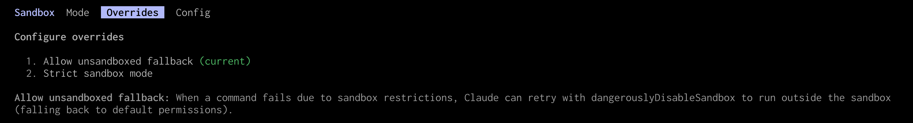

Hardening your system in the age of agents
Content from the webinar slides for easier browsing.
The landscape is evolving fast. This webinar is about communicating concepts. Tools are only shown as examples and which tools you choose depends on your OS, how important your data and your system are, and your personal risk tolerance.
The problem
Cybersecurity is not new. What changed?
Outside risk
➔ Finding exploits for cyberattacks has become a lot easier for a lot more actors.
Inside risk
➔ New risks coming from inside your own system from your own agents.
Multiagent orchestration
Multiple agents run in parallel in child threads. This demultiplies token usage and risks if poorly managed.
AI agents
AI agent = model + harness
Model
LLM
The intelligent part
Passive text generator
Not a liability in itself
(beside hallucinations and disinformation)
Harness
Software infrastructure that turns the model into an actor
- Set of tools to run code, read files, search the web…
- Context & memory fed to the model
- Guardrails & safety layers (unfortunately flawed)
These function in a loop until a goal is reached:
Reason ➔ Act ➔ Check result ➔ Reason ➔ … ➔ Goal
Examples CLI harnesses
OpenCode (open source)
Codex CLI (OpenAI, open source for Codex CLI only)
Claude Code (Anthropics, fully closed source)
Antigravity CLI (Google, fully closed source)
GitHub Copilot CLI (GitHub, fully closed source)
…
What are the risks?
- Data loss
- Compromised system
- Privacy breaches
- Exposition of sensitive data
1. Update often
Agents keep finding vulnerabilities. Install patches as soon as they are released (rolling distros might be at an advantage).
Make sure to update/install from trusted sources.
2. Backup often
Examples of backup tools:
BorgBackup (Python)
restic (Go) and its Rust implementation rustic
Vykar (Rust)
Kopia (Go)
Make sure that backups are encrypted if they are online.
3. Use version control
For all your projects. Consider using it for your system files. It will make undoing actions of agents A LOT easier.
4. Use a password manager
Example of open-source tool: KeePassXC
- Never reuse passwords
- Be mindful of your clipboard and tools using it
- Randomly generated multi-word passphrases provide more entropy than short passwords while being easier to remember

5. Be mindful of sensitive data
What is where?
What sensitive data do you have where?
Check your computer(s), phone, old/broken computers/phones, backup systems, files remote systems, online files (e.g. Google Drive, emails).
Does it need to be there?
Delete sensitive data where not needed.
Who has access to what?
Who has access to your sensitive data? Do they need to have access?
Remove access to shared online documents when not needed anymore.
On shared systems, remove access from users who don’t need it.
Linux file permissions
Learn the Linux permission system, as well as the chown and chmod commands. For more subtle sharing, check access control lists (ACLs).
Encryption
At the hardware level
Not using RAM nor CPUs
More secure and more efficient
Hardware Security Module (HSM)
Self-Encrypting Drive (SED)
Using software
Files encryption
Directories encryption
File system encryption
Whole disk encryption
Files encryption: OpenPGP
Open standard for cryptographic operations, cross platform, uses key pairs: public key to encrypt and private key to decrypt.
Evolving with new algorithms and post-quantum cryptography. New format: RFC 9580 using Ed25519 elliptic curve algorithm.
It is not the default in common applications, so make sure to use RFC 9580 when generating keys.
Sequoia PGP
OpenPGP is used by GnuPG, although now diverging from it. A more modern and robust Rust implementation is Sequoia PGP.
Generate key pair:
sq key generate --profile rfc9580 --own-key --name "John Doe" --email jdoe@example.comList certificates and keys:
sq cert listEncrypt files:
sq encrypt --binary --for <keyid> <file> --signer-email <email> --output <file>.gpgDecrypt:
sq decrypt <file>.gpg --output <file>Sequoia GnuPG Chameleon
Sequoia Chameleon is a reimplementation of the GnuPG interface so that existing software (email clients, scripts, etc.) can use Sequoia without code modifications.
gpg-sq & gpgv-sq emulate gpg & gpgv.
You can symlink gpg-sq to gpg to act as drop-in replacement:
mkdir $HOME/bin
ln -s /usr/bin/gpg-sq $HOME/bin/gpg
export PATH="$HOME/bin:$PATH"gpg --version
which gpgDirectories encryption: gocryptfs
Initialization
# Create data dir (cipher) and mount dir (plain)
mkdir cipher plain# Create master key (stored in gocryptfs.conf)
# and directory initialization vector (stored in gocryptfs.diriv)
gocryptfs -init cipher
# ls cipherUsage
# Mount cipher onto plain
gocryptfs cipher plain# Create test files and dirs
touch plain/file{01..10}
mkdir plain/dir{1..5}
# ls plain
# ls cipher# Unmount plain
fusermount3 -u plain
# ls plainTo use the KeePassXC password manager to automatically use a pwd to mount, you could do:
keepassxc-cli show -a password <database>.kdbx <password> | gocryptfs cipher plain6. Sandbox your agents
What is a sandbox?
A form of containment. It does not prevent unexpected behaviours, but it reduces the blast radius. There are many tools.
Trade-off
What about containers?
They were not designed for sandboxing purposes. Kernel shared with the host (vulnerability). Most require root privilege which adds exposure. Apptainer (rootless) is better.
➔ Same level of inconvenience as microVM for less security.
What about built-in tools?
Harnesses come with a number of modes, options, and capabilities. Familiarize yourself with the harness you use.
Models are changing so fast that any architecture around them becomes instantly obsolete. Companies rebuild their harness every couple of weeks. This is a very fast evolving topic.
Instructions & skills
Persistent context
CLAUDE.md, AGENTS.md, GEMINI.md, etc. are files containing rules that agents read at the start of each session.
Unfortunately, you cannot trust agents to follow instructions.
Skills
Modular and reusable files containing instruction for specific tasks.
Modes
⚠️ YOLO (“You Only Live Once”) mode removes all guardrails
Command hooks
Some harnesses allow you to set hooks that run before certain commands. They can however be bypassed by agents using alternative utilities/methods/paths/etc.
Built-in sandboxes
Codex
on by default
- Linux/WSL2: Landlock/seccomp or bubblewrap
- Windows (PowerShell): native Windows sandbox
- macOS: Apple’s Seatbelt
Claude Code
off by default, controlled by agent (!!)
Antigravity CLI
Seatbelt on macOS, container on Windows, container with gVisor on Linux.
If the sandbox is part of the harness, the agent might be able to control it (in the case of Claude Code, it absolutely can…).
Not to mention some exceptionally ridiculous design decisions…

🤨 … 🤣
Adding your own sandbox
If you don’t trust the agent, some constraints need to be outside the harness, out of reach of the agent.
More complex systems
Everybody is experimenting. The sandbox outside the harness still contains the risks of API keys and sensitive data egress (data exfiltration). There are more complex systems that isolate the agent and the data in separate microVMs.
There is no consensus yet on tools and practices.
bubblewrap
bubblewrap (Linux only) is the engine behind Flatpak. It is installed on the clusters.
You bind mount directories and set env variables needed, everything else is out of reach. You end by launching a shell/tmux/your agent/your MCP servers.
bwrap \
--ro-bind /usr/bin /usr/bin \
--bind $HOME/.cache $HOME/.cache \
--setenv HOME "$HOME" \
--setenv USER "$USER" \
<command>Example script:
#!/bin/bash
# Stop and exit quickly if something fails (easier to debug)
set -euo pipefail
# You could limit available commands here
SANDBOX_PATH="$HOME/.local/bin:/usr/local/bin:/usr/bin:/bin"
# use exec to replace current script by bwrap command instead of forking
# --ro-bind bind mounts paths read-only
# --bind bind mounts paths with write access
exec /usr/bin/bwrap \
--tmpfs /tmp \
--dev /dev \
--dir /dev/shm \
--tmpfs /dev/shm \
--proc /proc \
--hostname ptsbox --unshare-uts \
--ro-bind /bin /bin \
--ro-bind /lib /lib \
--ro-bind /lib64 /lib64 \
--ro-bind /usr/bin /usr/bin \
--ro-bind /usr/lib /usr/lib \
--ro-bind /usr/local/bin /usr/local/bin \
--ro-bind /usr/local/lib /usr/local/lib \
--ro-bind /etc/resolv.conf /etc/resolv.conf \
--ro-bind /etc/profile.d /etc/profile.d \
--ro-bind /etc/ssl/certs /etc/ssl/certs \
--ro-bind /etc/passwd /etc/passwd \
--ro-bind /etc/ld.so.cache /etc/ld.so.cache \
--ro-bind /etc/ld.so.conf /etc/ld.so.conf \
--ro-bind /etc/ld.so.conf.d /etc/ld.so.conf.d \
--ro-bind /etc/localtime /etc/localtime \
--ro-bind /usr/share/terminfo /usr/share/terminfo \
--ro-bind /usr/share/ca-certificates /usr/share/ca-certificates \
--ro-bind /etc/nsswitch.conf /etc/nsswitch.conf \
--ro-bind /etc/hosts /etc/hosts \
--ro-bind /etc/gai.conf /etc/gai.conf \
--ro-bind /etc/ssl/openssl.cnf /etc/ssl/openssl.cnf \
--ro-bind /usr/share/zoneinfo /usr/share/zoneinfo \
--ro-bind $HOME/.bashrc $HOME/.bashrc \
--ro-bind $HOME/.gitconfig $HOME/.gitconfig \
--ro-bind $HOME/.local $HOME/.local \
--ro-bind /etc/ca-certificates /etc/ca-certificates \
--ro-bind "$XDG_RUNTIME_DIR/bus" "$XDG_RUNTIME_DIR/bus" \
--bind $HOME/.cache $HOME/.cache \
--bind "$PWD" "$PWD" \
--setenv HOME "$HOME" \
--setenv USER "$USER" \
--setenv PATH "$SANDBOX_PATH" \
--setenv XDG_RUNTIME_DIR "$XDG_RUNTIME_DIR" \
--setenv DBUS_SESSION_BUS_ADDRESS "unix:path=$XDG_RUNTIME_DIR/bus" \
--chdir "$PWD" \
--setenv TERM "$TERM" \
--setenv XDG_RUNTIME_DIR "$XDG_RUNTIME_DIR" \
--setenv DBUS_SESSION_BUS_ADDRESS "unix:path=$XDG_RUNTIME_DIR/bus" \
zshNow compare this from the launched Zsh vs a normal Zsh:
cd /etc
lsmicrosandbox
Installation
microsandbox is a cross-platform local microVM.
Test installation with:
msb doctorOn Linux, make sure that you have KVM loaded.
Load it with:
sudo modprobe kvm_intelCan run TypeScript, Rust, Python, Go, Ruby, or from the CLI. We’ll use the CLI here.
It uses OCI (Open Container Initiative) images from Docker Hub or other registry.
Help
msb --helpmsb --treeSubcommands:
msb image --helpmsb image --treeNavigate long help outputs with for instance:
msb run --help | lessExamples
msb run ubuntu -- echo hellomsb run ubuntu -- bashmsb lsmsb run --name devbox ubuntu -- bash
# msb lsRunning agent (e.g. OpenCode)
msb run -t --name opencodebox --replace \
--cpus 2 --memory 2G --root-disk 4G \
--mount-dir .:/workspace:rw \
--workdir /workspace \
node:24-bookworm-slim -- sh -lc '
apt-get update &&
apt-get install -y --no-install-recommends ca-certificates git &&
npm install -g opencode-ai@1.18.4 &&
exec opencode
'Additional considerations
MCP
Gives your agents new accesses and capabilities.
Review carefully.
Also needs to run inside your sandbox.
Log agent sessions
Might help you troubleshoot if things go wrong.